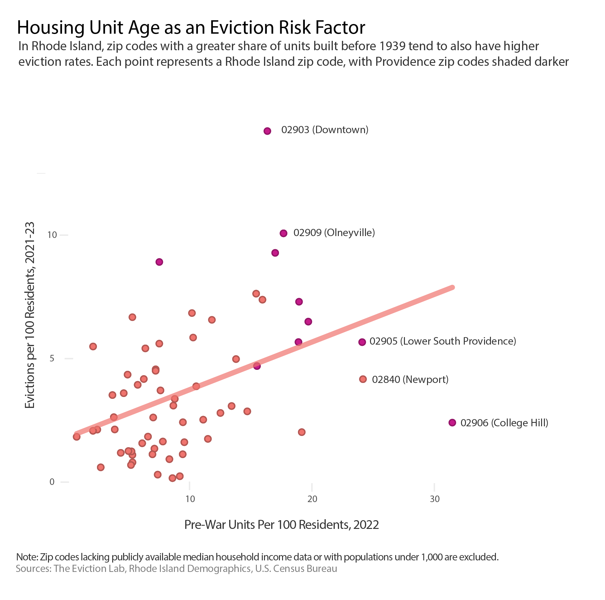

Image Source: Boston Globe
Zoey Katzive | May 2, 2024
Brown University Data Science Institute
Rhode Island is in the midst of a housing crisis. Skyrocketing home and rent prices, affordable housing shortages, and extreme costs of living have forced residents into struggle, while demand for housing units in the state continues to increase as policymakers desperately try to keep up. This issue demands immediate attention from policymakers, community organizers, and researchers.
As part of my work with the Brown Information Futures Lab’s pilot program, The Information Project (TIP), I researched the housing crisis and its risk factors, looking primarily through the lens of eviction and its prevalence throughout the state. The team I worked on consisted of four undergraduate and graduate student data analysts, and together we produced a report detailing trends in eviction and potential risk factors that I will link here once it becomes publicly available in May 2024. The report was one of several put together by TIP with an overall goal of addressing information disparities impacting the Rhode Island housing crisis. I contributed three data visualizations to this project by compiling and cleaning several datasets from the U.S. Census Bureau and the Eviction Lab, a Princeton University built database for tracking evictions nationwide.
Our team was able to identify geographic risk factors for eviction, and I have since examined affordable housing shortages in Rhode Island to understand a root cause of the crisis and brainstorm a path forward. In this article, I aim to use data visualizations to showcase where those working to combat the crisis should allocate their resources and highlight a key issue to prioritize.
To combat high eviction rates, it is crucial to understand who is at risk and why. Given that eviction rates are inconsistent throughout the state, we can identify which parts of Rhode Island may be hit hardest by the housing crisis.
Right away, it is clear that the zip codes surrounding Providence, Rhode Island’s capital, are subject to the highest eviction rates. 02903, which contains Downtown Providence, had the highest eviction rate, with approximately 14.21 per 100 residents experiencing eviction between 2021 and 2023.
The mean eviction rate across all Rhode Island zip codes between 2021 and 2023 was approximately 3.71%. Other larger cities in Rhode Island with disproportionately high per capita evictions included:
However, while there is more existing evidence to back up that evictions are prevalent in urban areas, this data suggests that housing crisis is not confined to Rhode Island’s cities. Several zip codes surrounding the suburban towns of Westerly and Hopkinton in southwestern Rhode Island also experienced above average eviction rates. Also in the southwest part of the state, the zip codes 02898 and 02812, which make up parts of the rural town of Richmond, had eviction rates of 6.68% and 5.49%, respectively. The population of Richmond is roughly 8,000, which demonstrates that a significant amount of people living in rural and suburban Rhode Island would benefit from resources to combat housing instability.
After understanding how eviction rates differ significantly across Rhode Island, the next step is to analyze the factors that put residents of certain zip codes more at risk than residents of others. Median income is an intuitive place to start –in most crises, those with less socioeconomic means can be expected to encounter the most adversity, and housing is no different.

Generally, one can observe that zip codes with lower median incomes tend to have higher rates of eviction. Data from Providence stands out here, as the four zip codes with the highest eviction rates are demonstrated to also be lower-income areas. One of these zip codes includes Olneyville, a neighborhood historically known for its high immigrant population, and nowadays, for its increasing levels of gentrification and income inequality. Another contains Wanskuck, which itself had a median income of just $36,000 in 2023. The connection between median income and eviction rates suggests that low-income Rhode Islanders are not receiving the support they need to achieve housing security for themselves and their families.
According to a 2022 study, Rhode Island ranks last in the country in new home construction per capita. As would therefore make sense, the Rhode Island housing stock contains a large share of pre-war units, which are defined as homes built prior to 1939. While these old homes have their charm, there are a number of associated costs to living in them, including high utility bills, dysfunction-prone appliances, and antiquated heating and cooling systems. When we map the connection between pre-war housing units per capita and eviction rates, we can see that there is a positive correlation between the two.
Providence stands out here once again, with many of the zip codes with the highest share of pre-war housing units containing parts of the capital city. College Hill has the largest share of pre-war units but a relatively low eviction rate, which may seem counterintuitive but makes sense when given the context that the zip code contains university housing. The zip codes containing Downtown Providence and Olneyville, in addition to being lower-income areas, have a higher share of units built before 1939.
Newport, despite being a relatively high income city, has a large share of pre-war housing and an above average eviction rate. In Newport County, 28.2% of all homes were built in 1939 or earlier, and just 12.0% of homes were built after the year 2000. This discrepancy may be explainable by significant income inequality in a seemingly luxurious part of Rhode Island. While the median income is boosted by the city’s wealthy population, poverty is still extremely pervasive. According to the Groundtruth Project, about 1 in 4 children in Newport live in poverty and nearly 70% of public school students come from low-income families.
Additionally, Newport is geographically segregated. The North End neighborhood, separated from mainland Newport by a bridge, has a significantly larger minority population and a poverty rate over three times higher than that of the city as a whole. When taking housing unit age into account, we can see a bigger picture of inequality in Rhode Island and learn that the housing crisis may affect areas that we may otherwise brush off as low-risk.
The logical next step after identifying who is at risk and why is to determine which resources or government actions would most benefit those impacted by the housing crisis. My preliminary research suggests that a key issue and a defining characteristic of this crisis is the shortage of affordable housing. In other words, there is simply not enough available housing in Rhode Island for low and middle income residents.
From this data, there is little evidence that the large gap between affordable rental housing and those in need of it is being adequately addressed. Even when the number of low income renter households decreases, the number available rental units does as well, thus maintaining the shortage.
We can draw a clear conclusion from this: Rhode Island needs to build more housing units that are actually accessible to lower income residents. The state’s poor record of new home construction and the fact that so many Rhode Islanders are struggling is proof that the affordable housing shortage is a key perpetuator of the housing crisis and must be prioritized by the state and local governments.
State officials have seemingly arrived at this conclusion as well. In late April, Gov. Dan McKee announced an amendment to his 2025 budget plan that will allocate roughly $31 million toward combating the housing crisis in large part by increasing housing production. Significantly, this amendment will allow for increased production of shelter beds, an area that has dwindled in funding over recent years.
“My administration is committed to improving the housing outlook for Rhode Islanders – whether they are experiencing housing insecurity, seeking rentals that families can afford, or working toward first-time home ownership," the governor stated upon announcing the proposal.
While homelessness is a pervasive issue in Rhode Island, however, it is clear that the housing crisis extends across multiple income brackets and that more funding must be allocated toward the construction of housing altogether. According to the Brown Daily Herald, several state congresspeople and community organizers are concerned about the long term sustainability of the budget amendment and have stressed the need to build new homes that are accessible to low and middle income Rhode Islanders. The construction of affordable housing units can also help decrease the burden of the homelessness crisis by providing those who are currently unhoused with sustainable places to live.
McKee’s amendment is a step in the right direction, but there is more progress to be made that starts with increased housing production. Funding must be allocated to this consistently to ensure that the Rhode Island housing crisis ends and does not return. This is not an easy solution, and more will need to be done to combat other elements of the crisis apart from the housing shortage, but it is critical that advocates and congresspeople prioritize closing the gap between those in need of affordable housing and available affordable housing.